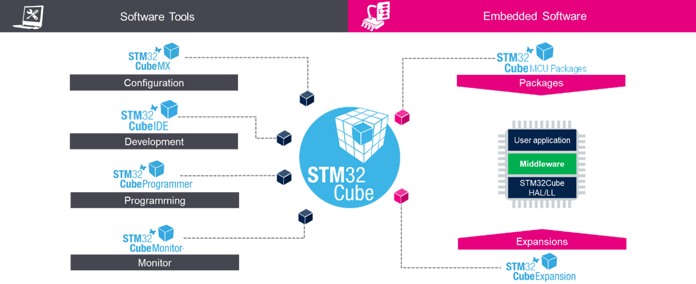

Release Notes for X-CUBE-AZRT-H7RS
Copyright © 2024 STMicroelectronics
Purpose
With Azure RTOS complementing the extensive STM32Cube ecosystem providing free development tools, software bricks, and software expansion packages, STM32 users can also leverage the rich services of Azure RTOS, which meet the needs of tiny, smart, connected devices.
X-CUBE-AZRT-H7RS (Azure RTOS Software Expansion for STM32Cube) provides a full integration of Microsoft Azure RTOS in the STM32Cube environment for the STM32H7R/S series of microcontrollers. Ready-to-run applicative examples are also provided for the NUCLEO-H7S3L8 and STM32H7S78-DK boards, thus reducing the learning curve and ensuring a smooth application development experience with Azure RTOS and STM32H7R/S MCUs.
The scope of this package covers the following Azure RTOS middleware: RTOS (ThreadX), USB Device and Host (USBX), File System including NOR/NAND memories support (FileX and LevelX) and Networking including Ethernet and WiFi media (NetXDuo).

Azure RTOS is a professional grade, highly reliable and market proven Middleware suite:
- Integrated and full featured RTOS. Learn more about ThreadX
- Industrial grade networking stack: optimized for performance coming with many IoT protocols. Learn more about Netx Duo
- Advanced FS/FTL: fully featured to support NAND/NOR Flash memories. Learn more about FileX and LevelX
- USB Host and Device stacks coming with multiple classes. Learn more about USBX
- Safety pre-certifications (from Microsoft): IEC 61508 SIL4, IEC 62304 Class C and ISO 26262 ASIL D
- Security pre-certifications (from Microsoft): EAL4+ for TLS/DTLS, FIPS 140-2 for SW crypto lib
- STM32 granted production license: here
Repository structure
The STMicroelectronics X-CUBE-AZRT-H7RS repository consists of the following repositories:
- STM32CubeMX: contains STM32CubeMX configuration
files:
- xml files: they describe how the software component configuration parameters can be modified through the STM32CubeMX user interface
- flt files: they provide the initialization code to be generated by the STM32CubeMX
- Drivers: contains STM32H7R/S CMSIS, HAL and BSP drivers
- Middlewares: contains ThreadX, NetX Duo, FileX, LevelX and USBX stacks including porting on STM32 hardware
- Projects: provides ready-to-run applicative examples for Azure RTOS on the supported boards. Projects are structured as follows:

Documentation
More comprehensive documentation is available on STM32 MCU Wiki.
Update history
Main changes
- Maintenance release of X-CUBE-AZRTOS-H7RS package.
- Azure RTOS update to V6.4.0
- Add 3 new NetXDuo Applications:
- Nx_MQTT_Client_wifi
- Nx_WebServer_wifi
- Nx_Iperf_wifi
- General updates to fix known defects and implement enhancements:
- Rework in the FileX/LevelX driver files to improve the performance of NOR flash memory and to implement enhancements brought by FileX and LevelX V6.4.0
- Update in LevelX files to allow user to customize flash base address
- STM32CubeMX configuration files (PDSC/IPmode/IPconfig):
- Add new ThreadX, LevelX, NetXDuo and USBX configuration flags brought by Azure RTOS release V6.4.0
- Update USBX for VIDEO, AUDIO, PRINTER and CCID classes
- Add support of Standalone mode for CCID/Video/Printer classes
- All Azure RTOS applications files regenerated using STM32CubeMX V6.14.0 and new Azure RTOS pack v1.1.0
Contents
Applications
Provides ready-to-run applicative examples for Azure RTOS on the supported boards. For detailed list refer to applications list
Drivers
| Name | Version | Release note |
|---|---|---|
| Cortex-M CMSIS | v5.9.0 | release notes |
| STM32H7RSxx CMSIS | v1.2.0 | release notes |
| STM32H7RSxx HAL | v1.2.0 | release notes |
| BSP STM32H7RSxx_Nucleo | v1.1.0 | release notes |
| BSP STM32H7S78-DK | v1.0.1 | release notes |
| BSP Common | v7.3.0 | release notes |
| BSP aps256xx | v1.0.6 | release notes |
| BSP cs42l51 | v2.0.6 | release notes |
| BSP gt911 | v1.0.1 | release notes |
| BSP lan8742 | v1.0.4 | release notes |
| BSP mx25lm51245g | v3.0.2 | release notes |
| BSP mx66uw1g45g | v1.1.0 | release notes |
| BSP ov5640 | v4.0.2 | release notes |
| BSP rk050hr18 | v1.0.1 | release notes |
| BSP tcpp0203 | v1.2.3 | release notes |
Middlewares
| Name | Version | Release note |
|---|---|---|
| ThreadX | 6.4.0 | release notes |
| NetXduo | 6.4.0 | release notes |
| USBX | 6.4.0 | release notes |
| FileX | 6.4.0 | release notes |
| LevelX | 6.4.0 | release notes |
CMSIS-RTOS wrapper for Azure RTOS ThreadX
| Name | Version | Release note |
|---|---|---|
| cmsis_rtos_threadx | 1.3.0 | release notes |
| CMSIS-RTOS API group | Supported | Short Description |
|---|---|---|
| Kernel Information and Control | Y | It provide version/system information and starts/controls the RTOS Kernel. More… |
| Thread Management | Y | It define, create, and control thread functions.. More… |
| Thread Flags | N | It synchronize threads using flags. More… |
| Event Flags | Y | It synchronize threads using event flags. More… |
| Generic Wait Functions | Y | It wait for a certain period of time.. More… |
| Timer Management | Y | It create and control timer and timer callback functions. More… |
| Mutex Management | Y | It synchronize resource access using Mutual Exclusion (Mutex). More… |
| Semaphores | Y | It access shared resources simultaneously from different threads. More… |
| Memory Pool | Y | It manage thread-safe fixed-size blocks of dynamic memory. More… |
| Message Queue | Y | It exchange messages between threads in a FIFO-like operation. More… |
The CMSIS-RTOS provides generic RTOS interfaces for Arm® Cortex® processor-based devices. It provides a standardized API for software components that require RTOS functionality.
For more information about CMSIS-RTOS APIs, please refer to the ARM manual: CMSIS-RTOS API
For more information about CMSIS-RTOS wrapper for Azure RTOS ThreadX, please refer to readme
Known limitations
- USBX composite device descriptors
- When the Bidirectional Endpoint feature is enabled, a maximum of 5 different class drivers can be selected otherwise only 3 different class drivers can be selected(restriction due to limited EP numbers).
- A list of USB device Applications supporting auto generation of USB Device framework descriptors provided for these USB class drivers :MSC, HID mouse, CDC ACM, CDC ECM, DFU, MTP, RNDIS, CCID, PRINTER, VIDEO, AUDIO and CustomHID. For the other device class drivers, user needs first to disable the device framework builder (refer to : USBX wiki section 2.2 How to customize) and provide the full set of required device descriptors.
- When using the Pack in STM32CubeMX
- FileX/LevelX: multi instance is not supported, a low level interface driver can be instantiated only once
- SDMMC multi instance is not supported, SDMMC1 and SDMMC2 cannot be instantiated simultaneously
- USB Host Vbus is not managed by the Pack, user needs to configure the Vbus GPIO using STM32CubeMX “Pinout & Configuration” panel
- USB multi instance is not supported, a class drivers can be instantiated only once
- The component “USBX/CoreSystem” must be selected alongside either “USBX/UX Host CoreStack” or “USBX/UX Device CoreStack”
- ThreadX
- ThreadX MPU application is not provided with STM32CubeIDE and MDK-ARM.
Development toolchains and compilers
- IAR Embedded Workbench for ARM (EWARM)toolchain 9.20.1 + ST-LINKV3.
- STM32CubeIDE V1.18.0 + ST-LINKV3
- RealView Microcontroller Development Kit (MDK-ARM) toolchain V5.39 + ST-LINKV3
Supported devices and boards
- NUCLEO-H7S3L8 (MB1737-B02)
- STM32H7S78-DK (MB1736-D01)
Dependencies
This software release is compatible with:
- STM32CubeMX V6.14.0
- STM32PackCreator 4.0.0
Main changes
- First official release of STM32Cube Azure RTOS software expansion for STM32H7R/S MCU series.
Contents
Applications
Provides ready-to-run applicative examples for Azure RTOS on the supported boards. For detailed list refer to applications list
Drivers
| Name | Version | Release note |
|---|---|---|
| Cortex-M CMSIS | v5.9.0 | release notes |
| STM32H7RSxx CMSIS | v1.0.0 | release notes |
| STM32H7RSxx HAL | v1.0.0 | release notes |
| BSP STM32H7RSxx_Nucleo | v1.0.0 | release notes |
| BSP STM32H7S78-DK | v1.0.0 | release notes |
| BSP Common | v7.3.0 | release notes |
| BSP aps256xx | v1.0.6 | release notes |
| BSP cs42l51 | v2.0.6 | release notes |
| BSP gt911 | v1.0.1 | release notes |
| BSP lan8742 | v1.0.3 | release notes |
| BSP mx25lm51245g | v3.0.2 | release notes |
| BSP mx66uw1g45g | v1.1.0 | release notes |
| BSP ov5640 | v4.0.2 | release notes |
| BSP rk050hr18 | v1.0.0 | release notes |
| BSP tcpp0203 | v1.2.3 | release notes |
Middlewares
| Name | Version | Release note |
|---|---|---|
| ThreadX | 6.2.1 | release notes |
| NetXduo | 6.2.1 | release notes |
| USBX | 6.2.1 | release notes |
| FileX | 6.2.1 | release notes |
| LevelX | 6.2.1 | release notes |
CMSIS-RTOS wrapper for Azure RTOS ThreadX
| Name | Version | Release note |
|---|---|---|
| cmsis_rtos_threadx | 1.2.0 | release notes |
| CMSIS-RTOS API group | Supported | Short Description |
|---|---|---|
| Kernel Information and Control | Y | It provide version/system information and starts/controls the RTOS Kernel. More… |
| Thread Management | Y | It define, create, and control thread functions.. More… |
| Thread Flags | N | It synchronize threads using flags. More… |
| Event Flags | Y | It synchronize threads using event flags. More… |
| Generic Wait Functions | Y | It wait for a certain period of time.. More… |
| Timer Management | Y | It create and control timer and timer callback functions. More… |
| Mutex Management | Y | It synchronize resource access using Mutual Exclusion (Mutex). More… |
| Semaphores | Y | It access shared resources simultaneously from different threads. More… |
| Memory Pool | Y | It manage thread-safe fixed-size blocks of dynamic memory. More… |
| Message Queue | Y | It exchange messages between threads in a FIFO-like operation. More… |
The CMSIS-RTOS provides generic RTOS interfaces for Arm® Cortex® processor-based devices. It provides a standardized API for software components that require RTOS functionality.
For more information about CMSIS-RTOS APIs, please refer to the ARM manual: CMSIS-RTOS API
For more information about CMSIS-RTOS wrapper for Azure RTOS ThreadX, please refer to readme
Known limitations
- USBX composite device descriptors
- When the Bidirectional Endpoint feature is enabled, a maximum of 5 different class drivers can be selected otherwise only 3 different class drivers can be selected(restriction due to limited EP numbers).
- A list of USB device Applications supporting auto generation of USB Device framework descriptors provided for these USB class drivers :MSC, HID mouse, CDC ACM, CDC ECM, DFU, MTP, RNDIS, CCID, PRINTER, VIDEO and CustomHID. For the other device class drivers, user needs first to disable the device framework builder (refer to : USBX wiki section 2.2 How to customize) and provide the full set of required device descriptors.
- When using the Pack in STM32CubeMX
- FileX/LevelX: multi instance is not supported, a low level interface driver can be instantiated only once
- SDMMC multi instance is not supported, SDMMC1 and SDMMC2 cannot be instantiated simultaneously
- USB Host Vbus is not managed by the Pack, user needs to configure the Vbus GPIO using STM32CubeMX “Pinout & Configuration” panel
- USB multi instance is not supported, a class drivers can be instantiated only once
- The component “USBX/CoreSystem” must be selected alongside either “USBX/UX Host CoreStack” or “USBX/UX Device CoreStack”
- ThreadX
- ThreadX MPU application is not provided with STM32CubeIDE and MDK-ARM.
- USBX
- When creating an USBX Host based application with MDK-ARM AC6 compiler make sure to disable the optimization for stm32h7rsxx_hal_hcd.c file, otherwise application might not work correctly. This limitation will be fixed in future release.
Development toolchains and compilers
- IAR Embedded Workbench for ARM (EWARM)toolchain 9.20.1 + ST-LINKV3.
- STM32CubeIDE V1.15.0 + ST-LINKV3
- RealView Microcontroller Development Kit (MDK-ARM) toolchain V5.38 + ST-LINKV3
Supported devices and boards
- NUCLEO-H7S3L8 (MB1737-B01)
- STM32H7S78-DK (MB1736-C01)
Dependencies
This software release is compatible with:
- STM32CubeMX V6.11.0
- STM32PackCreator 3.6.0